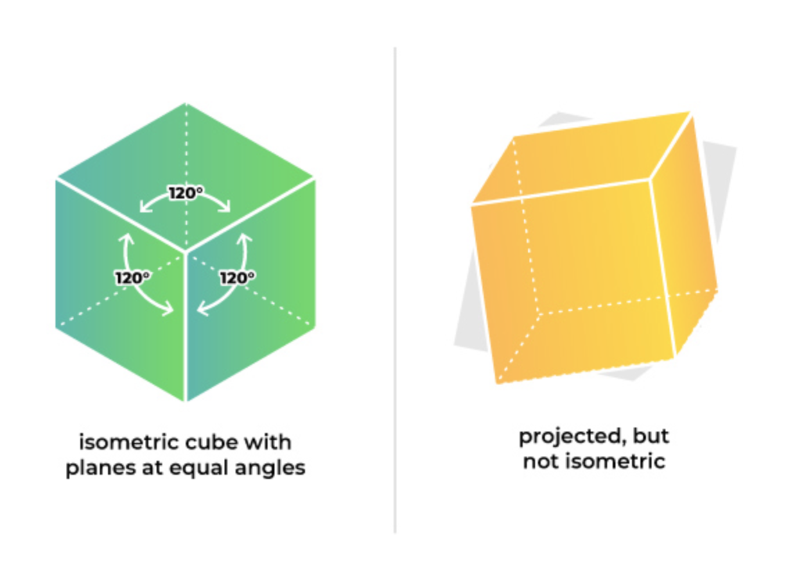

Isometric design is a technique that graphic designers use to create three-dimmensional objects in a two-dimmensional space. According to the Merriam-Webster dictionary, the word isometric means "characterized by equality of measure." In the case of isometric design, the three axis of an object— width, height, and depth— intersect at a 120° angle. This is what creates the illusion that the object is actually three-dimmensional when it is in a two-dimmensional space.
The great thing about isometric design is that it can be used in a variety of ways. One way to consider implementing isometric designs into your branding or business could be for logos or icons. This is a subtle detail that users can appreciate because it stands out from what other companies or designers are currently doing on their websites or other media.
Another way designers can use isometric design—which is the way that I use it—is by creating a landscape or re-creating an existing landscape in a simpler way. Low-poly diorama is a term that I have seen other graphic designers use to classify this type of design, which is fitting due to the small—yet detailed—elements of this design style. I personally find myself scrolling through Dribbble for hours looking at these types of designs because they are so captivating. That's also why I decided to try out this style for myself and have been developing it over the past year. These are just a few of the "dioramas" that I have created.
The software that I use to create isometric designs is an open source software called Blender. I like using this software mainly because it is free. Just because it is free, however, that does not mean that it isn't powerful. Blender supports animation, modeling, rendering, video editing, and motion tracking right there within the application. The only downside is that rendering and other functions take a lot of power to use and to create the designs that you want, so unless you have a hefty laptop or desktop computer setup, most of your images could take anywhere from one to thirty minutes to complete. Don't worry though! There are other softwares that you can use to get the same effect. Read more about Blender here.
If you subscribe to Adobe Creative Cloud, then you can use Adobe Illustrator to create these mind-blowing designs. When I use Illustrator, I like to download a free isometric grid that I can open up as a layer in Illustrator and create my designs over it. This allows for me to ensure that all of the angles and lines are proportioned properly and accurately throughout the entire design. If you ever feel bored with the current design work that you are creating, I would suggest jumping into Illustrator and playing around with this style to see what you can create. The possibilities are endless!
This is a tutorial that I found when I was first starting to learn about isometric design. If you slow down the video and follow along, you can see the basics of setting up your viewport and modeling the elements that you want to include in your design.
Isometric design has definitely become more popular over the past year, and while no one can predict what trends will be current in the following year, I think that isometric design will be around for awhile.
I would encourage you to try it out and play around with the different types of designs that you can make. Whether that be an icon pack for your website or app, creating a new logo, or just to have fun and see what you can create, don't be affraid to try out something new. Do some research, get some inspiration, and get creative!